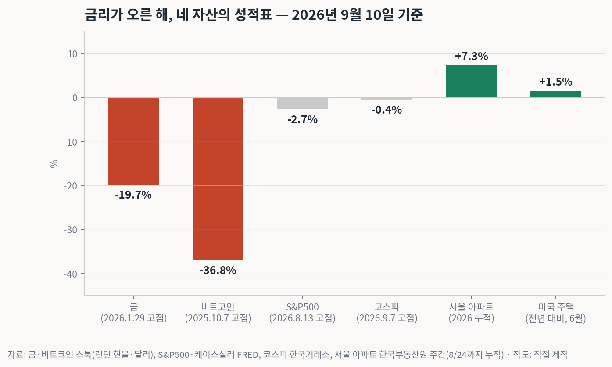
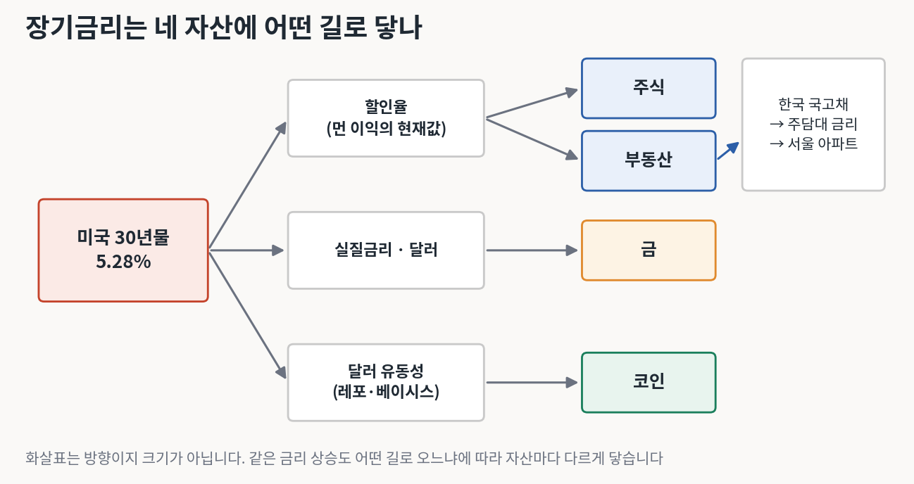
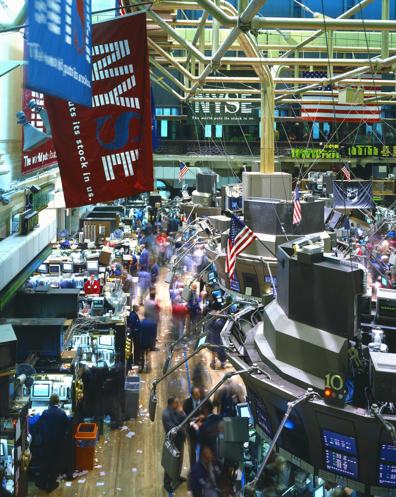
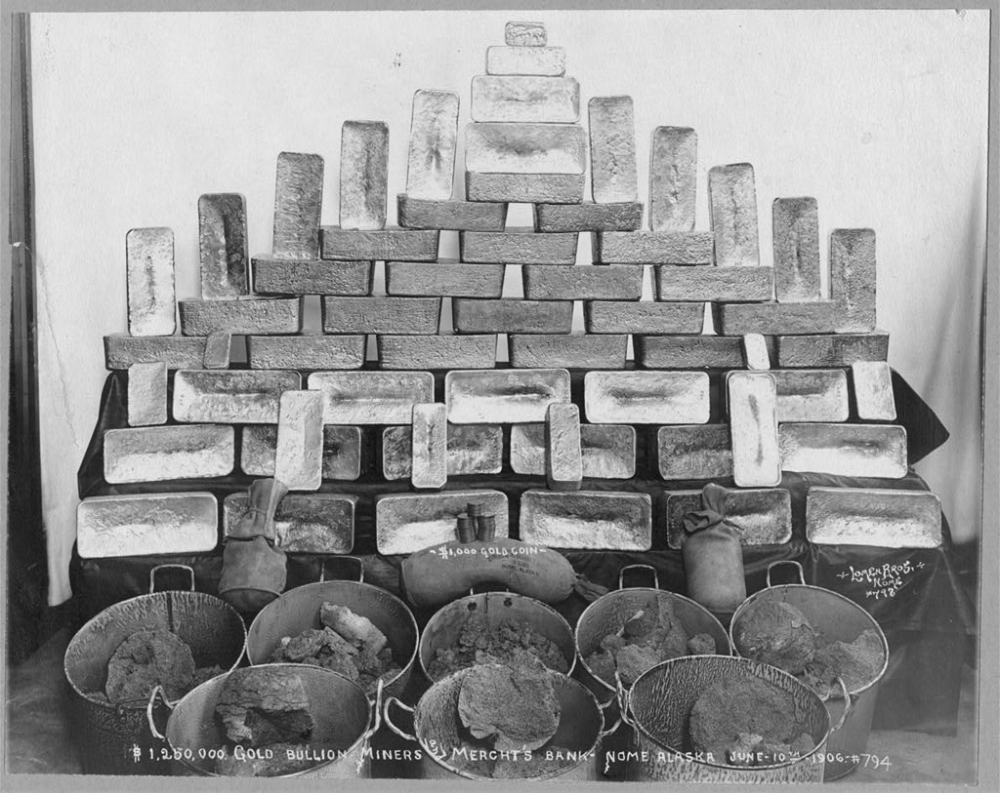
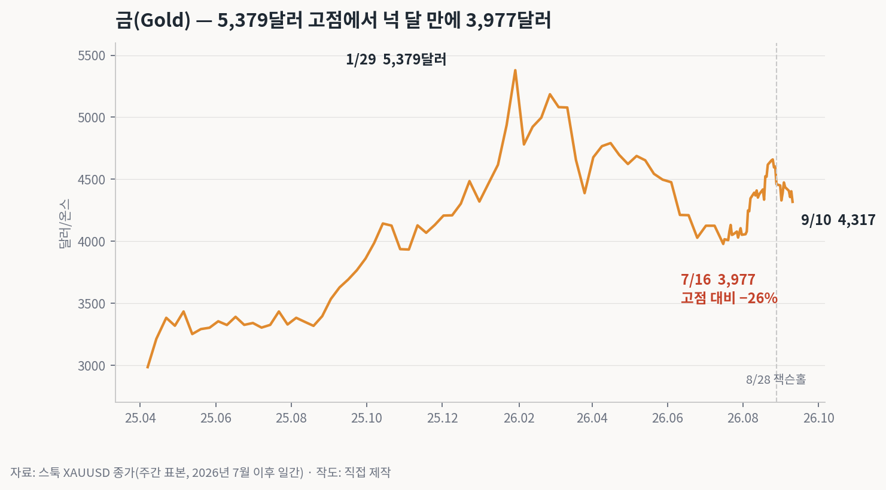
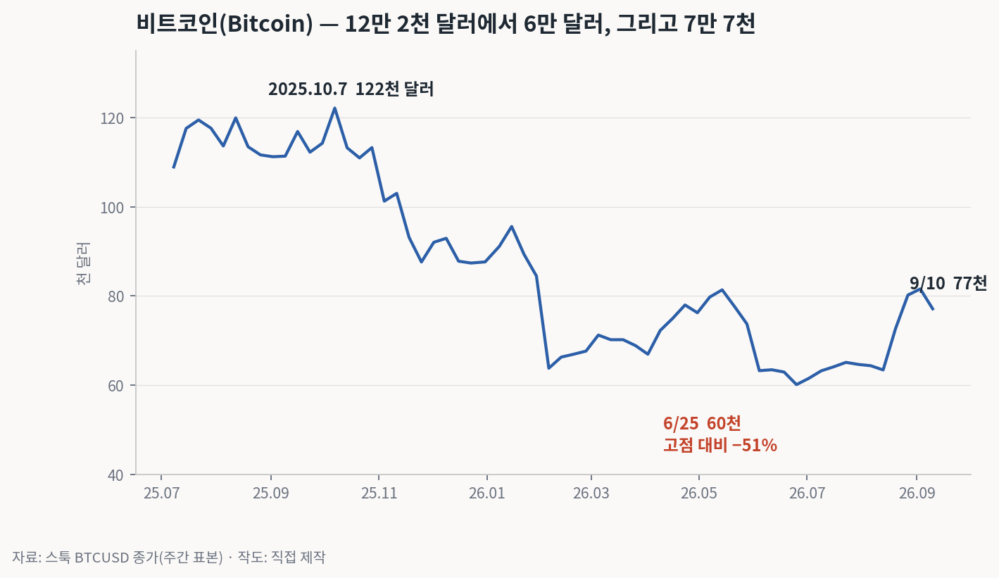
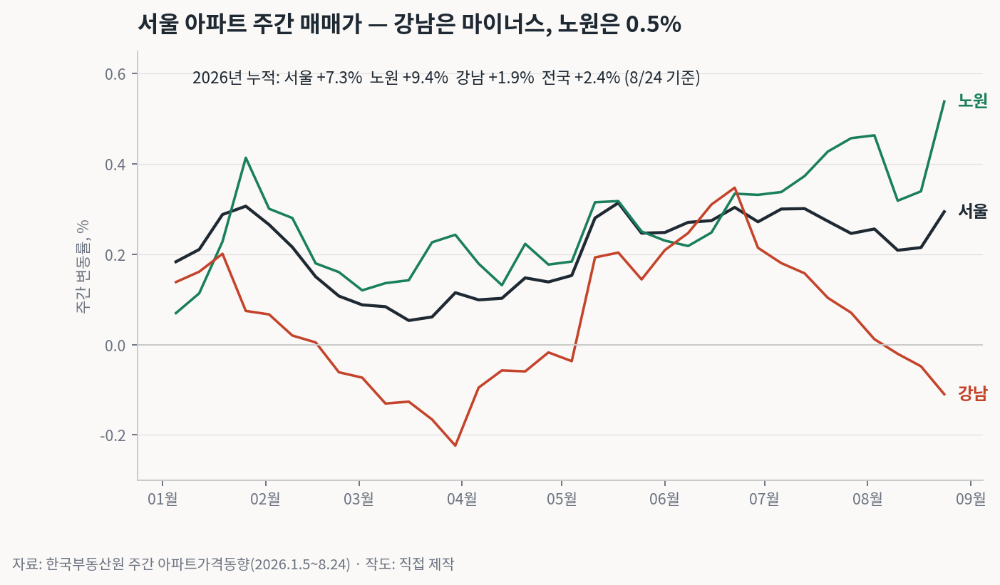
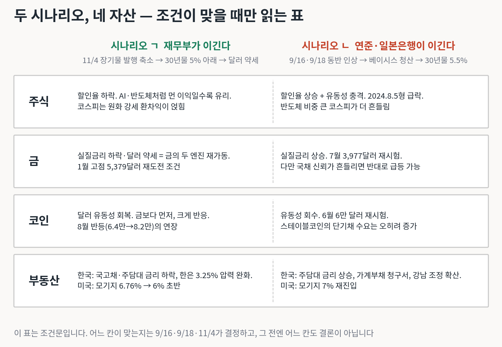

금리는 모든 자산의 중력이다 — 다만 같은 중력이 자산마다 다른 길로 닿는다
4부작의 마지막입니다. 27편에서 중국과 일본, 28편에서 미국, 29편에서 한국의 금리와 부채를 봤습니다. 오늘은 그 위에 놓인 네 자산, 주식·금·코인·부동산이 지금 어디에 있고, 앞으로 어떤 조건에서 어느 쪽으로 움직이는지를 정리합니다.
먼저 분명히 해 둘 것이 있습니다. 이 글은 어느 자산을 사라거나 팔라는 글이 아닙니다. 금리가 자산에 닿는 길을 원자료로 그리고, 조건이 이러면 이쪽, 저러면 저쪽이라는 조건문을 적는 글입니다. 조건이 맞는지는 9월 16일, 18일, 11월 4일이 결정합니다.

2026년은 미국 30년물이 5.3%까지 오른 해입니다. 그 해에 가장 크게 떨어진 자산은 금과 비트코인입니다. 금은 1월 29일 5,379달러 고점에서 7월 3,977달러까지 26% 빠졌다가 지금 4,317달러, 고점 대비 20% 아래입니다. 비트코인은 2025년 10월 12만 2천 달러에서 올 6월 6만 달러로 반 토막 났다가 7만 7천 달러, 고점 대비 37% 아래입니다.
반대로 주식은 거의 안 빠졌습니다. S&P500은 8월 13일 7,799 고점에서 2.7% 아래이고, 코스피는 9월 7일 6,995에서 0.4% 아래입니다. 부동산은 올랐습니다. 서울 아파트가 올해 누적 7.3%, 미국 주택이 전년 대비 1.5%입니다. 금리 상승기에 실물과 이익이 있는 자산은 버티고, 이자를 안 주는 자산이 먼저 맞았습니다. 이 순서가 이 글의 출발점입니다.

길은 셋입니다. 첫째는 할인율(discount rate)입니다. 주식과 부동산의 값은 미래 이익을 현재값으로 바꾼 것이고, 그 환율이 장기금리입니다. 금리가 오르면 먼 미래의 이익일수록 싸집니다. AI 설비투자처럼 회수가 먼 사업이 금리에 예민한 이유입니다.
둘째는 실질금리와 달러입니다. 금은 이자가 없으니 물가를 뺀 실질금리가 오르면 금을 들고 있는 기회비용이 커지고, 달러가 강하면 달러로 값을 매기는 금은 내려갑니다. 올해 금이 26% 빠진 건 이 길이었습니다. 셋째는 달러 유동성입니다. 코인은 이익도 이자도 없어서 오직 돈이 얼마나 풀려 있느냐에 반응합니다. 28편의 베이시스 거래 8,300억 달러가 풀리면 가장 먼저 흔들리는 자산입니다.
한국에는 길이 하나 더 있습니다. 미국 장기금리가 국고채로, 국고채가 주택담보대출 금리로, 그것이 서울 아파트로 이어지는 길입니다. 29편에서 본 대로 한국은 그 청구서가 정부가 아니라 가계에 갑니다.

S&P500이 고점 근처에 있는 이유는 워시 의장이 잭슨홀에서 말한 숫자 하나로 설명됩니다. 기업 이익이 전년 대비 20% 넘게 늘고 설비투자가 9% 늘었습니다. 할인율이 올라도 분자인 이익이 더 빨리 크면 주가는 버팁니다. 코스피는 여기에 반도체 수출 209%와 원화 강세 13%가 얹혔습니다.
문제는 이 버팀이 조건부라는 점입니다. 시나리오 ㄱ, 재무부가 11월 4일 장기물 발행을 줄여 30년물이 5% 아래로 내려오면 할인율이 내려가고 먼 이익일수록 다시 비싸집니다. 시나리오 ㄴ, 9월 16일과 18일에 연준과 일본은행이 같이 올리고 베이시스 거래가 풀리면 2024년 8월 5일이 반복됩니다. 그날 코스피는 8.77%, 닛케이는 12.4% 빠졌습니다. 반도체 비중이 큰 코스피가 S&P500보다 더 흔들리는 구조는 그때와 같습니다.


20편에서 중앙은행 외환보유고에서 금이 미국 국채를 30년 만에 앞질렀다고 썼습니다. 그 흐름은 지금도 유효하지만 가격은 다른 이야기입니다. 1월 5,379달러는 실질금리 하락과 달러 약세, 두 엔진이 같이 돌 때의 값이었습니다. 3월부터 미국 물가가 3.7%에 머물고 금리가 오르자 실질금리가 반등했고, 금은 넉 달 만에 26% 빠졌습니다. 8월 25일 4,659달러까지 되올랐다가 잭슨홀 뒤 다시 4,300대입니다.
조건문은 이렇습니다. 시나리오 ㄱ이면 두 엔진이 재가동되고 1월 고점 재도전이 열립니다. 시나리오 ㄴ이면 7월 저점 3,977달러를 다시 시험합니다. 다만 금에는 예외 조항이 하나 있습니다. 28편의 금 재평가 카드처럼 미국 국채 자체의 신뢰가 흔들리는 국면이면 금리가 올라도 금이 오릅니다. 2022년 영국 길트 위기 때 파운드 기준 금값이 그랬습니다.

비트코인은 2025년 10월 7일 12만 2천 달러에서 올 6월 25일 6만 달러까지 51% 빠졌습니다. 같은 기간 금이 오르고 있었으니 둘은 같은 자산이 아닙니다. 코인은 달러 유동성이 줄면 금보다 먼저, 더 크게 빠지고, 8월에 6만 4천에서 8만 2천으로 반등한 것도 재무부가 바이백을 두 배로 늘린다고 발표한 8월 19일 전후 주간과 겹칩니다.
조건문입니다. 시나리오 ㄱ이면 8월 반등의 연장이고, 시나리오 ㄴ이면 6만 달러 재시험입니다. 한 가지 역설이 있습니다. 19편에서 본 달러 스테이블코인은 준비금을 미국 단기국채로 두어야 하므로, 코인 시장이 커질수록 미국 단기채 수요가 늘어납니다. 베센트가 스테이블코인을 밀어 온 이유이고, 코인 가격과 무관하게 이 수요는 남습니다.

서울 아파트는 올해 누적 7.3% 올랐지만 안을 들여다보면 갈라져 있습니다. 강남은 8월 들어 주간 변동률이 마이너스로 돌아섰고, 노원은 0.5%로 올해 최고입니다. 11편에서 2026년이 2021년이 아니라 2007년을 닮았다고 썼는데, 그해도 강남이 먼저 멈추고 외곽이 뒤늦게 키를 맞추다 2008년을 맞았습니다. 지금 주간 그래프가 그 순서를 그리고 있습니다.
여기에 29편의 청구서가 붙습니다. 8월 주택담보대출이 4조 3천억 늘었고 한국은행은 10월 22일 3.25%를 열어 두었습니다. 국고채 10년물 4.45%는 주담대 고정금리의 기준입니다. 시나리오 ㄱ이면 국고채가 미국을 따라 내려와 한은의 인상 압력이 줄고, 시나리오 ㄴ이면 주담대 금리 상승과 강남 조정이 외곽으로 번지는 경로가 열립니다. 미국은 모기지 30년 고정이 6.76%로 올해 최고이고, 케이스실러 주택가격은 전년 대비 1.5%로 거의 멈춰 있습니다.

이 표는 예측이 아니라 조건문입니다. 왼쪽 칸이 맞으려면 11월 4일 재무부가 장기물 발행을 줄여야 하고, 오른쪽 칸이 맞으려면 9월 16일과 18일 두 중앙은행이 같이 올려야 합니다. 28편에서 본 대로 탄약은 재무부 쪽이 많고 시간은 중앙은행 쪽이 유리합니다. 그래서 순서는 9월에 오른쪽이 먼저 시험되고 11월에 왼쪽이 답한다가 될 가능성이 큽니다.
4부작을 한 줄로 줄이면 이렇습니다. 미국은 정부 빚을 낮은 금리로 굴리려 하고, 일본은 밖에 빌려준 돈을 거둬들이고, 중국은 넘치는 예금을 쓸 곳을 못 찾고, 한국은 반도체로 번 돈으로 가계 빚의 이자를 내고 있습니다. 네 자산은 그 네 나라의 결정이 만나는 자리에서 값이 매겨집니다. 다음 확인은 9월 16일 밤입니다.
자료: 스툭(XAUUSD·BTCUSD 종가), 세인트루이스 연준 FRED(SP500·MORTGAGE30US·CSUSHPINSA·DGS30), 한국거래소 코스피 종가(9/7·9/10), 한국부동산원 주간 아파트가격동향(2026.1.5~8.24), 금융위원회 2026년 8월 가계대출 동향, 연준 이사회 워시 의장 잭슨홀 연설(2026.8.28), 연준 FEDS Notes(2026.6.22).
사진: 미국 의회도서관 인쇄·사진부 — 하이스미스 아카이브(뉴욕증권거래소 객장), 인쇄·사진부(1906년 알래스카 노메 금괴). 모두 공개 제한 없음으로 표시된 자료.
이 글은 투자 권유가 아니며 특정 자산이나 종목의 매수·매도를 추천하지 않습니다. 시나리오는 조건문이며 예측이 아닙니다. 투자 판단과 책임은 투자자 본인에게 있습니다.